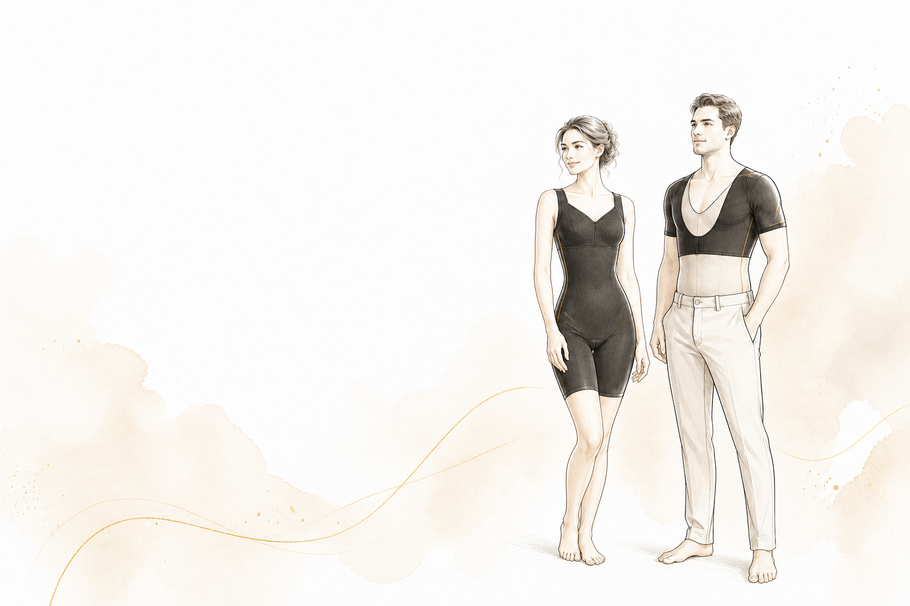

肌筋膜動態平衡剪裁
依循身體筋膜鏈與活動方向規劃多軸向剪裁，引導腰腹與背部均勻受力，降低傳統單點高壓帶來的束縛感。
從肌筋膜張力力學出發，融合機能纖維與人體工學護椎結構，提供穩定、貼合而不僵硬的日常支撐，讓身體在活動中自然舒展。

不是單點勒緊，而是讓支撐力沿著身體結構均勻展開
依循身體筋膜鏈與活動方向規劃多軸向剪裁，引導腰腹與背部均勻受力，降低傳統單點高壓帶來的束縛感。
纖維混紡機能礦物材料，運用身體自然熱能形成溫感穿著體驗。材質機能與數據以正式產品檢測報告為準。
腰背支撐條順應脊椎自然曲線，協助分散日常坐姿與站姿的受力，提供姿態提醒與穩定包覆。
高回彈面料隨呼吸與腹部變化提供溫和感知，幫助使用者留意坐姿、呼吸與進食節奏。
從長時間工作到體態管理，提供輕量而持續的支撐感
長時間使用電腦時，透過腰背包覆與姿態提醒，幫助察覺塌坐與重心偏移。
以均勻包覆維持俐落腰線，搭配規律活動與均衡飲食，建立可長期維持的生活節奏。
希望在通勤、家務或日常活動中獲得輕度支撐，同時保留自然活動空間。
高彈透氣面料搭配簡單洗護方式，讓貼身機能衣更容易融入每日穿著。
以舒適、透氣、可活動為設計前提，不以過度壓迫換取外觀。穿著感受因人而異，請依尺寸指南循序適應；若出現疼痛、麻木、呼吸不適或皮膚異常，請停止使用並尋求專業意見。